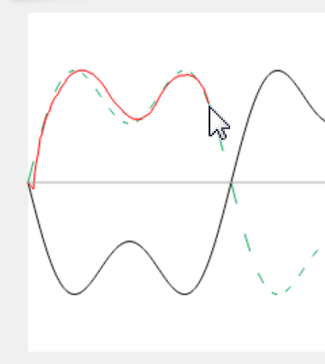

A friend is trying to enjoy some peace and quiet, but the noise from nearby construction is making it difficult. Your friend asks you for help. Your job is to play the role of a noise cancelling device and produce the opposite sound (called antinoise) to cancel out the unwanted noise.
How to play:
 The black line is the noise that is coming in. In order to cancel the noise, use your mouse or touch screen to draw a line that mirrors the noise across the gray line, going from left to right. When the noise goes up, you go down. When the noise goes down, you go up. You can follow the green dashed line to get good cancellation, or you can turn the green dashed line off for a greater challenge by unchecking the "show guide" button.
Once you have finished cancelling the noise you will see the resulting noise, along with the amount of noise reduction that your cancellation caused. Your goal is to reduce the noise to a flat line. Compare your noise reductions with those of your friends to see who is the best at controlling noise!
To start a new game, select the "New Game" button.
Inspired by Steve Nott's Antinoise Game.